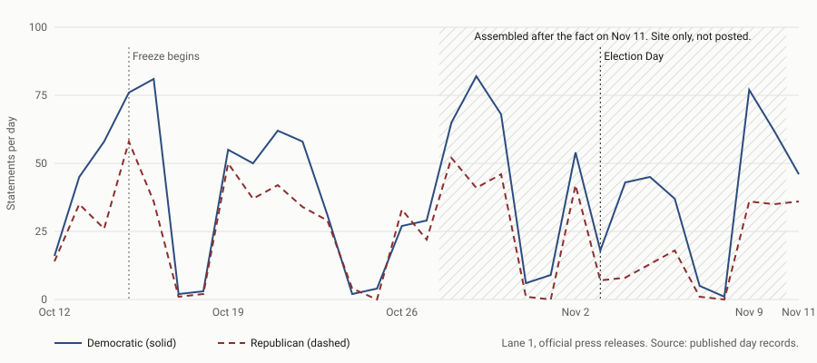

We Froze the Instrument for the Election. Then It Went Dark.
OnScript locked its methods on October 15. On October 28 a change at GitHub broke every run, and election week was measured after the fact. This is the record, the outage included.
By Michael King · 2026-11-23
- descriptive A description of the corpus, not a test of a hypothesis.
- correlation-not-cause A measured association. No causal claim is made.
- symmetric-instrument Both parties passed through the same pipeline and thresholds.
- party-asymmetric The result differs by party. The method that produced it does not.
On October 15 we froze OnScript for the election. Until November 10, no prompt or threshold could change, and we held the code, schemas and feature flags still with them. Nothing changed during the freeze. The runs stopped anyway. On October 28 a change at GitHub broke every scheduled run, and none succeeded again until November 11. Election week was measured after the fact, by the same frozen instrument. This is that record, including the two weeks we were not watching.
What was locked, and when
The freeze is Article VIII of the project's constitution, public since July 11. It is the only claim in this piece that was made before the fact. Every published day record carries a fingerprint of the code, prompts and thresholds that produced it. All 27 day records from October 15 through November 10 carry the same one (be56d40d), and so do their assembly manifests and nightly symmetry audits.
We registered no hypotheses about election week. A round of pre-registrations planned for October never ran. So everything below is description. Nothing was predicted, and nothing was tuned after the result.
The outage
On October 28 GitHub moved its ubuntu-latest runner image to Ubuntu 26.04, which does not offer the Python version our workflows pin. From the first failure that night until November 11, GitHub lists 104 runs of our workflows. 78 failed, 26 were skipped, and none succeeded. 27 of the failures were our own watchdog, the job meant to notice the others.
The failures paged. We read the pages as freeze noise. We also treated the freeze as barring any push, and it does not. Article VIII freezes prompts and thresholds, and it allows a verified defect fix with a public notice. Pinning a runner image touches neither. Nobody recognized the outage until after November 10. That was our misreading, not the rule.
On November 11 we turned Bluesky posting off, pinned the workflows to the previous image, and assembled the 14 missing days, October 28 through November 10, oldest first, from the same mirror of official press releases and with the instrument whose fingerprint is above. None of the 14 days was posted to Bluesky. They are on the site only. Our constitution requires a public postmortem for a missed day. The repair is recorded in the repository's session history.
The marks are in the published manifests, and each of the 14 day pages links a correction in our corrections log that names all fourteen days and what differs about them. Thirteen of the 14 assembly manifests are marked as manual runs. The fourteenth, November 5, reads as an ordinary scheduled, unattended day that cleared the gate; only its generation date, November 11, shows it was late. A secondary block of older-format metrics is missing from 13 of the days, October 28 through November 9. Nothing here uses it.
Election Day was published below our own bar
The pipeline normally holds a day until enough of it has arrived: 40 percent of a same-weekday baseline of Lane-1 statements. Election Day holds 25, 18 Democratic and 7 Republican. Replaying the gate from the counts it recorded at the time for the three prior Tuesdays gives a baseline of 80 and a share of 31 percent. Those counts are the earliest and smallest for those days, because the mirror only grows, so Election Day was at most about 31 percent of its live baseline. A normal run would have held it and published it on the third calendar day after, November 6, marked as forced. The repair path skips the gate, so November 3 went out as an ordinary day. We have not rewritten its manifest. We are saying it here instead.
It was assembled eight days late, so a mirror still filling is a less likely reason than usual. We cannot rule it out.
What the record shows
Every count here is Lane 1: official press releases, collected by the same scraper for both parties.
Monday to Friday totals, Democratic then Republican: October 12 to 16, 276 and 169. October 19 to 23, 256 and 192. October 26 to 30, 271 and 194. Election week, November 2 to 6, 197 and 88. Both parties published less in election week.

On Election Day no phrase reached the day-record floor in either party: three offices using the same phrase on the same day. The day is below our readiness bar, so read that with care.
After the result the counts differ. From November 4 to 6, Democratic offices published 125 statements and had at least one phrase at the three-office floor on all three days. Republican offices published 39 and had none; on November 4 that was 8 statements from 6 offices. The floor is a fixed number of offices, so a party publishing fewer statements has fewer chances to reach it. We read this as a difference in volume before anything else.
Naming a phrase takes receipts. Our phrase evidence file counts source units, a joint release once, and holds receipts for a phrase only on its busiest day so far. So the rule we can cite is narrower than the most-used phrase of the day. For each party and each day from November 4 to 11, among the phrases whose busiest day it was, we pick the one with the most source units from that party, at least three. November 4, 10 and 11 are the only days with any candidate. Every receipt the file holds for each pick is at the bottom of this page.
On November 4 the Democratic pick is "the 120th congress" (6 Democratic units). It ranks fifth in that day's record, not first. No Republican phrase met either floor that day. On November 10, the last day of the freeze, the picks are "continue fighting to" (5 Democratic units) and "in the 120th congress" (3 Republican units; 4 Democratic units used it too). Neither appears in that day's day-record list. November 11, Veterans Day and the first scheduled day back, falls outside the freeze, and its fingerprint differs because code changed after the freeze ended. The picks are "benefits they have earned" (5 Democratic units; 7 Republican units used it too) and "men and women who have" (9 Republican units).
Every phrase we checked had appeared before November 4 in our corpus, which begins on January 1, 2025. Among the 54 distinct phrases in the day records from November 4 through 10, the latest first appearance is February 24, 2026. Among the 47 phrases in the evidence file whose busiest day falls between November 4 and 11, it is June 10, 2026. Each day record keeps at most ten phrases per party, and phrases below either floor were not checked.
What this does not say
We did not measure why either party published less in election week. The post-election difference in shared phrases says nothing about which party's message operation is better or worse. The method is the same for both parties: one pipeline, one set of prompts and thresholds, recorded in every nightly symmetry audit.
Why the outage leads
OnScript asks to be trusted because it shows its work. That has to include the weeks it failed. The 14 days are on the site; what marks them as late is the correction each of their pages links and their manifests, and every number above can be recomputed from the records linked below. Our operations plan said this retrospective would ship within seven days of the election. It did not.
Provenance
- day records
- data/derived/days/2026-10-12.json through 2026-11-11.json (Lane 1 by construction: run_assemble.assemble keeps lane == 1)
- estimators
- daily and Monday-to-Friday sums of Lane-1 statements per party; phrase floor = 3 distinct offices, same party, same day (sync_min 3), up to 10 phrases kept per party per day; first appearance = first_seen date in the corpus, which starts 2025-01-01
- freeze
- Constitution Article VIII (docs/06), Oct 15 to Nov 10; instrument fingerprint be56d40d6b755f580957ad2c7fa6382ebb351864c45469b9cda991bc2614273f on every day record, assembly manifest and symmetry audit in the window
- manifests
- data/derived/manifest/assemble-<day>.json, post-<day>.json, collect-<run date>.json
- outage
- GitHub Actions run list, 2026-10-28 to 2026-11-11 (gh run list); docs/26 Session 74-2
- phrase receipts
- data/derived/phrase-evidence.json (verifier-grade, privacy-checked receipts, held only for each phrase's peak_day; units are distinct source units, a joint release once) and data/derived/phrases/<slug>.json for ngram and first_seen. Rule per day (2026-11-04..11) per party: among phrases whose peak_day is that day, no U+FFFD in the ngram, highest party unit count of 3 or more, ties to grounded_units then slug. Every receipt the file holds for that party on that day is shown. Script: p7_phrase_receipts.py
- readiness replay
- pipeline.readiness.expected_volume over the Lane-1 counts each scheduled assembly manifest recorded at gate time (the smallest counts for those days; the live gate's baseline was at least as large); READY_RATIO 0.40; MAX_WAIT_DAYS 2 product days = third calendar day
- rerun
- python p7_series.py; python p7_runs.py; python p7_figure.py (scripts archived with the draft assets)
- symmetry audits
- data/derived/symmetry/<day>.json (lane1_only true on all 27 freeze days)
- window
- 2026-10-12 to 2026-11-11; election week 2026-11-02 to 11-06; aftermath 2026-11-04 to 11-10
Every number in this piece comes from the published record and can be recomputed from the sources it cites.